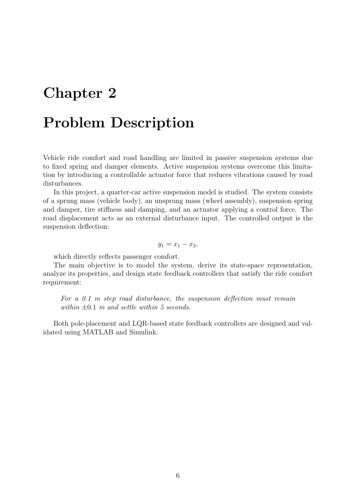
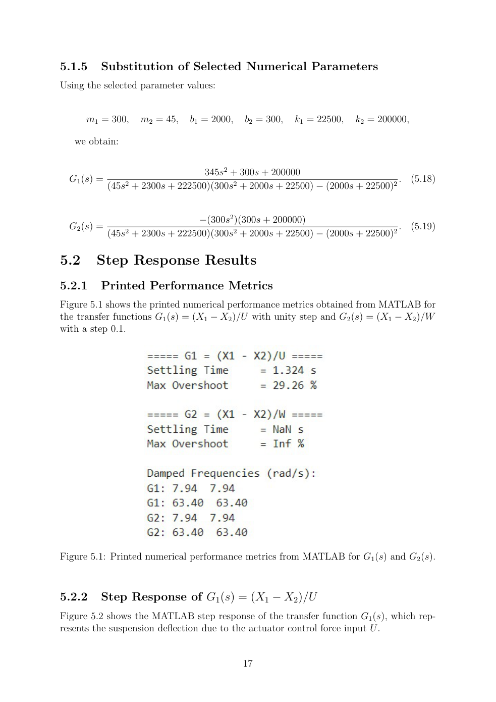
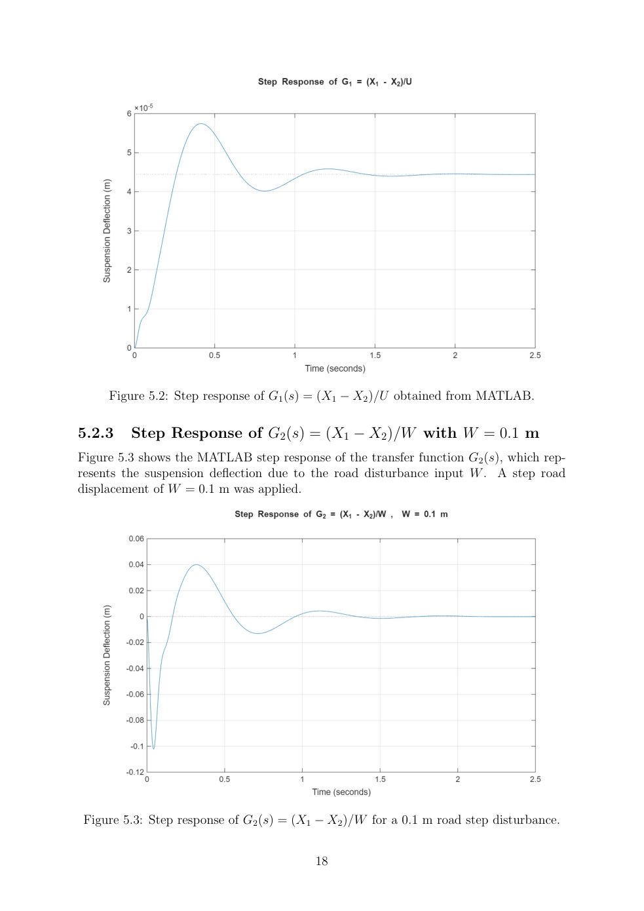
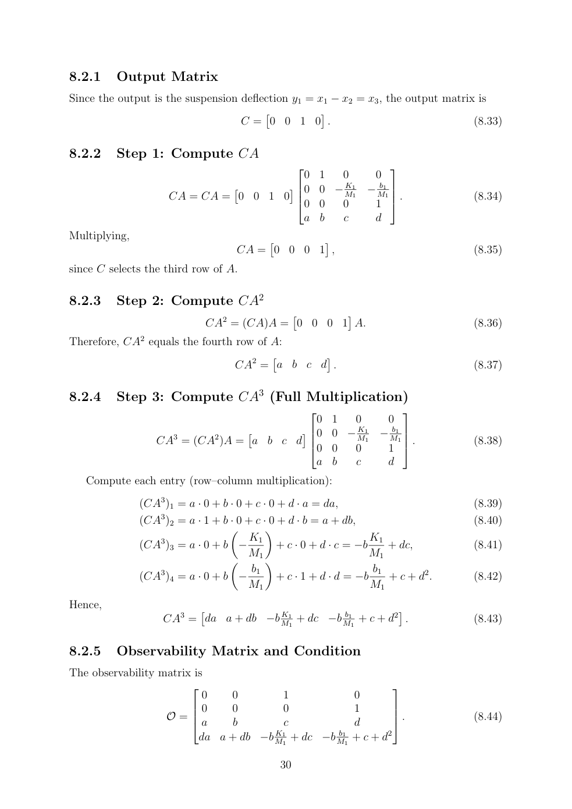
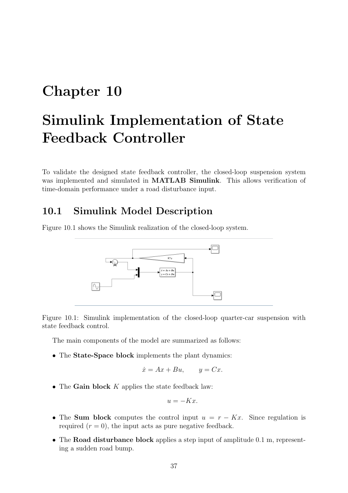
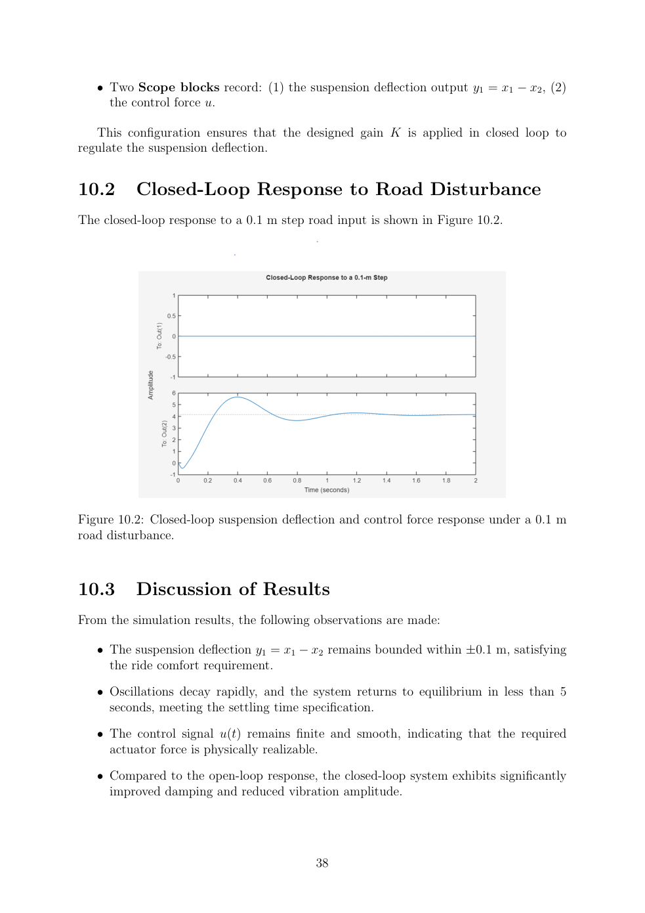
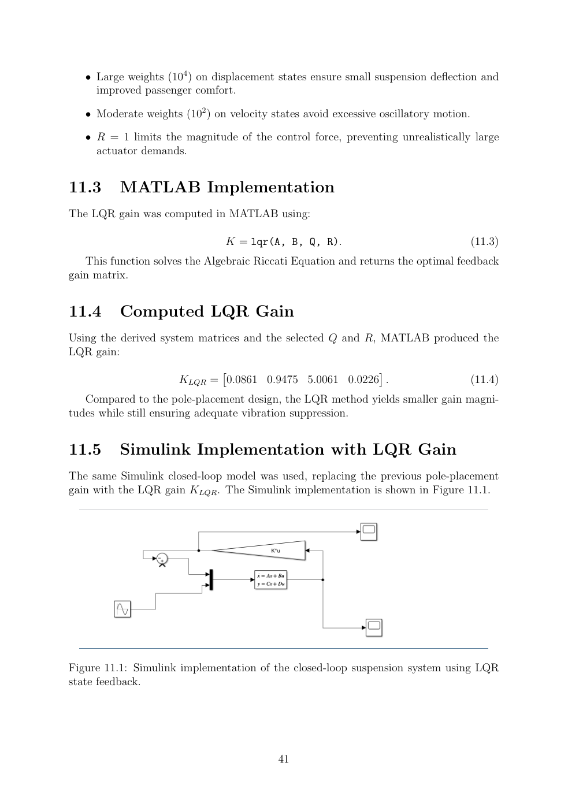
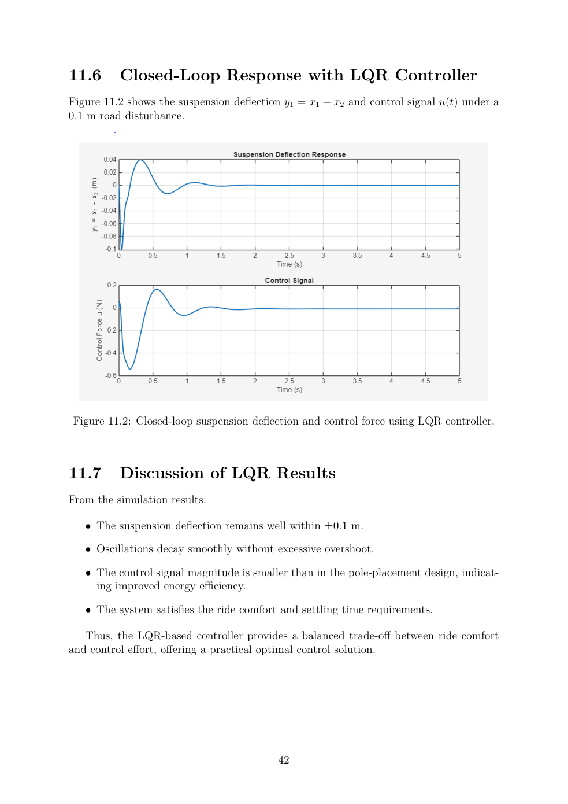

Method and results
The mathematical model was developed using Newton's laws and converted into transfer-function and state-space formulations. The report examines controllability and observability, then compares the pole-placement and LQR controller response in Simulink. It reports an open-loop G1 settling time of approximately 1.32 s and 29.3% overshoot; these are specific to the report's actuator-input transfer-function test, not a verified closed-loop performance metric.
TECHNICAL EVIDENCE
Quarter-car plant and physical model
Two-degree-of-freedom sprung/unsprung mass model; road displacement W and active force U.

TECHNICAL EVIDENCE
Open-loop transfer functions
MATLAB step responses of suspension deflection to actuator input and road input (0.1 m step).

TECHNICAL EVIDENCE
Road disturbance response
Relative displacement approaches zero at steady state in the reported open-loop response.

TECHNICAL EVIDENCE
Controllability and observability
State-space representation and system-property checks documented in the report.

TECHNICAL EVIDENCE
Pole-placement Simulink model
State feedback gains obtained from Ackermann pole assignment; report-selected poles −0.798 ± j1.066, −5, −6.

TECHNICAL EVIDENCE
Pole-placement simulated result
Reported closed-loop response to 0.1 m road step and applied control-force output.

TECHNICAL EVIDENCE
LQR Simulink model
Quadratic optimal control with state weights Q and control penalty R, implemented in Simulink.

TECHNICAL EVIDENCE
LQR simulated result
Reported closed-loop suspension response and actuator effort under the 0.1 m road disturbance.

Available original code and simulation files
The source RAR contains Transfer_Functions_Step_Input.m, Ackermann_Gains.m, LQR_Gains.m, Simulink_Simulation.slx, and a report PDF. The report also includes printed MATLAB code in its appendix (approximately pages 44–49).